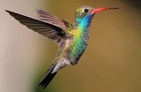

Hummingbird

Hummingbirds are tiny, colorful birds known for their ability to stay in one place by flapping their wings very fast. They come from the Americas and are the smallest birds, usually 3 to 5 inches long. Hummingbirds mainly eat nectar from flowers, which they get with their long beaks. They also have shiny feathers that can look like they change color in the light. These birds are amazing to watch as they move around quickly and skillfully.